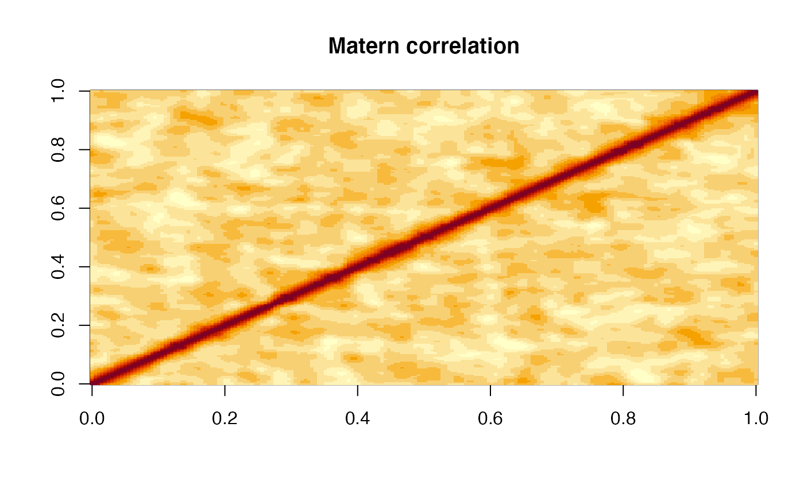
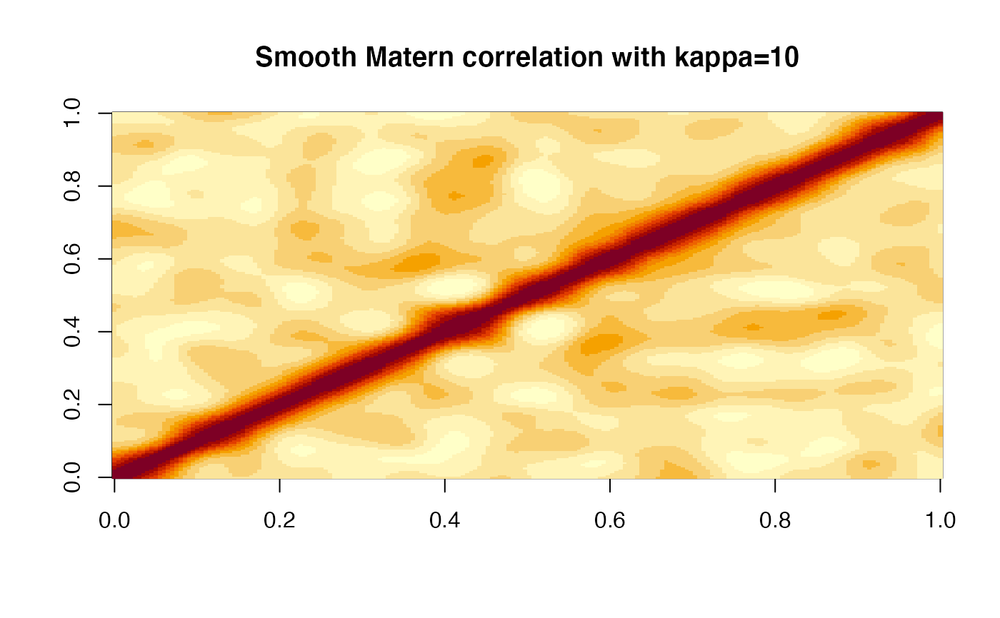
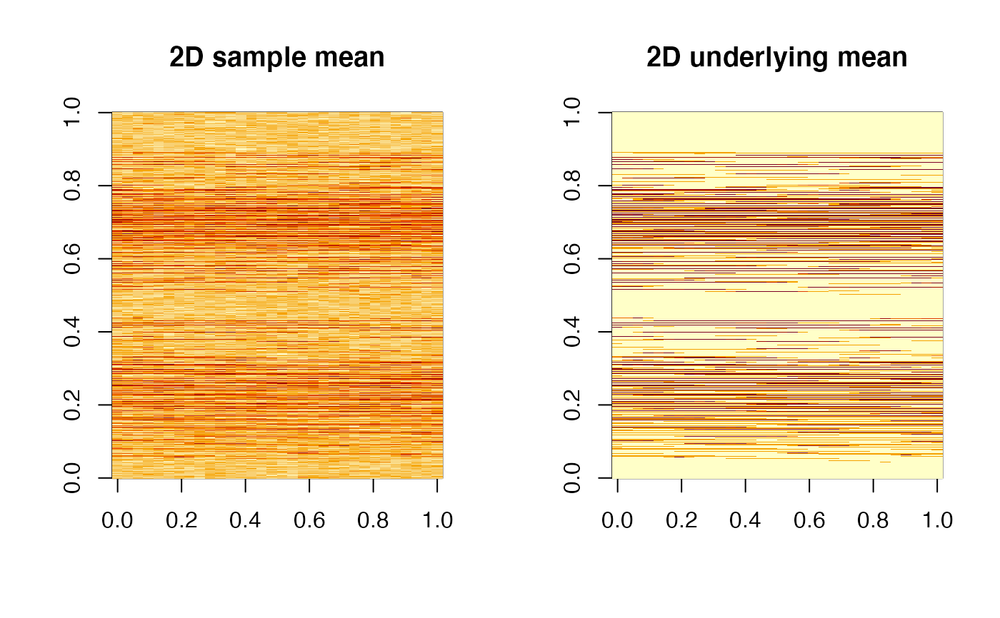

simulation_data_1D generates one-dimensional data,
simulation_data_2D generates two-dimensional image data.
simulation_data_1D( n_points, n_obs = 100, mu_type = c("step", "sine", "custom"), cov_type = c("AR", "exponential", "matern", "any", "iid"), custom = NULL, corrupt = FALSE, ... ) simulation_data_2D(n_obs = 100, corrupt = FALSE, rho = 0.3, ...) simulate_1D( generator, snr = 0.2, block_sizes = 21, initial_filter = 0.9, alpha = 0.05, bandwidth = 90 )
| n_points | number of hypotheses, less equal than 1000 |
|---|---|
| n_obs | number of observations to generate |
| mu_type | underlying function type, choices are 'sine', 'step', and 'custom' |
| cov_type | covariance type, choices are |
| custom | function to generate mean function if |
| corrupt | whether to use corruption model to generate data instead of addition model |
| ... | passed to internal function; see 'Details' |
| rho | for two-dimensional simulation only, the correlation between adjacent locations |
| generator | list items returned by |
| snr | positive number to control the signal-to-noise ratio |
| block_sizes | integer vectors to control the block size;
see |
| initial_filter, bandwidth | used by |
| alpha | 'FOCR' and 'FDR' level; default is |
When mu_type is 'custom', parameter custom needs to be a
function that takes 1:n_points as input and spit out the underlying
mean function.
When cov_type is 'AR', the auto-correlation of adjacent column
will be 0.9; The cov_type="exponential" and cov_type="matern"
share the same phi=0.01 (range parameter) but different kappa
(smoothness parameter). If you wish to change the range or smoothness
parameter, pass phi and kappa to ... (see 'Examples').
For 'any' cov_type, the underlying covariance will be
generated from a real data with arbitrary dependence. For 'iid'
cov_type, the errors are independent standard normal distributed.
By default, corrupt is false, then the generated data is an addition
of underlying signal plus random noises. When corrupt is true, the
underlying signal will be randomly corrupted for each observation. The amount
of corrupted points follows a binomial distribution.
# -------------------- Basic usage ------------------------ generator <- simulation_data_1D(200, cov_type = 'matern')#># generate date with signal-to-noise ratio = 0.4 data <- generator$gen_data(snr = 0.4) # Data is n_obs x n_points matrix dim(data)#> [1] 100 200# -------------------- Change Matern parameters ------------------------ # Control kappa/phi here generator <- simulation_data_1D(200, cov_type = 'matern', kappa = 10)#>data <- generator$gen_data(snr = 0.4) image(cor(data), main = 'Smooth Matern correlation with kappa=10')# -------------------- 2D data ------------------------ # generate a 2D triangle data generator <- simulation_data_2D(cov_type = 'AR') data <- generator$gen_data(snr = 0.6) par(mfrow = c(1,2)) image(matrix(colMeans(data), 32), main = '2D sample mean')#> Warning: data length [23700] is not a sub-multiple or multiple of the number of rows [32]#> Warning: data length [23700] is not a sub-multiple or multiple of the number of rows [32]# -------------------- Simulation used by paper ---------- # might take a while to run if(interactive()){ generator <- simulation_data_1D(n_points = 1000, cov_type = 'AR') set.seed(1000) sim <- simulate_1D(generator, snr = 0.3) plot(sim) }